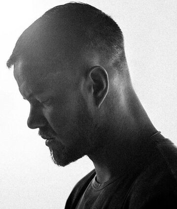
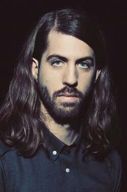
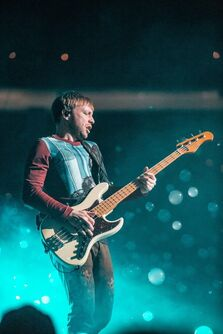

¡Conócenos!
En la última media década, Imagine Dragons se ha convertido en una de las bandas de rock más grandes y atractivas del mundo. Un año después de su lanzamiento en junio de 2017, su tercer álbum de estudio EVOLVE alcanzó el doble platino, con tres sencillos consecutivos en el número uno: "Believer", "Thunder" y "Whatever It Takes". En medio de su Evolve World Tour -una gira de 116 fechas que vendió más de 1,7 millones de entradas en todo el mundo-, la banda ganadora del premio Grammy y multiplatino comenzó a trabajar en su continuación, y terminó creando su trabajo más dinámico hasta la fecha.
Concebido como un álbum hermano de Evolve, Origins continúa con las exploraciones sónicas de su predecesor, al tiempo que honra la herencia alt-rock de Imagine Dragons. "Se trata de buscar nuevos terrenos pero también de apreciar tus raíces", dice el vocalista Dan Reynolds, cuyos compañeros de banda son el guitarrista Wayne Sermon, el bajista Ben McKee y el batería Daniel Platzman. "Cuando creamos, lo hacemos sin límites, sin reglas. Nos parece emocionante hacer música que se siente diferente y nueva para nosotros".
Autoidentificándose como "sin género", Imagine Dragons unió fuerzas con productores como Joel Little (Lorde, Khalid), Mattman & Robin (Selena Gomez, Carly Rae Jepsen) y John Hill (Florence + the Machine, Phantogram) para esculpir el sonido caleidoscópico y cargado de energía de Origins. Con la banda mezclando ingeniosamente el rock, el hip-hop, el pop y el folk, el álbum está grabado con texturas inventivas que nunca distraen de un elemento esencial de Imagine Dragons: letras que hablan de una autoconciencia a veces dolorosa, pero que en última instancia elevan e inspiran.
el poderoso single principal de Origins, "Natural" -un tema que ocupó el primer puesto en la lista de canciones alternativas durante cinco semanas consecutivas y que batió el récord histórico de reproducciones en la lista de radios alternativas con más de 4.000 reproducciones en una sola semana-, Imagine Dragons ofrecen una meditación sobre el autodescubrimiento, compartiendo el mensaje de que "cuando aprendes de verdad a quererte a ti mismo, los ojos que te juzgan y las palabras de odio dejan de tener sentido", como dice Reynolds. Con su título haciendo un guiño a El origen de las especies de Charles Darwin y la fascinación de Imagine Dragons por la biología evolutiva, Origins también examina cómo el avance tecnológico ha alterado la experiencia humana. Presentada como la canción de los créditos finales de la película de Walt Disney Animation Studios Ralph Breaks the Internet, la fantástica y rápida "Zero" se centra en el aislamiento en la era de las redes sociales, pero se desarrolla astutamente como un himno a la autoaceptación. Por su parte, la frenética y difusa "Digital" capta una cierta frustración existencial, pero insinúa la esperanza de Reynolds de que las generaciones más jóvenes sean más abiertas. En otras partes de Origins, la banda reflexiona sobre las muchas dimensiones del amor romántico, encarnando todo, desde la inquieta intensidad de "Boomerang" hasta la melancolía soñadora de "Cool Out" y la balada épica de "Bad Liar". Y en la conmovedora y contundente "West Coast", Reynolds reflexiona sobre el "miedo a descuidar las relaciones debido a la trayectoria profesional que elegí", transformando suavemente ese miedo en una gloriosa pieza de folk-pop.
Uno de los momentos más potentes de Origins, la lenta "Birds", se hace eco de una agridulce sensación de cierre, un elemento especialmente significativo para Reynolds. "Cuando trabajé con Joel Little en 'Birds', tuve que salir de la habitación durante un rato para procesar la catarsis que supuso escribir una verdad triste", dice. "Es una de mis canciones favoritas del disco, porque reflexiono sobre ese momento capturado y soy capaz de revivirlo con cada escucha".
Formados en 2009, Imagine Dragons revelaron por primera vez su pasión ilimitada y sus sensibilidades de género con una serie de EPs lanzados de forma independiente que rápidamente se ganaron un seguimiento de base. Después de que el exitoso productor Alex Da Kid los fichara para KIDinaKORNER/Interscope, la banda hizo su debut en un gran sello con Continued Silence, un EP de 2012 que incluía el single de doble platino "It's Time". Con su debut de larga duración, Night Visions, que llegó ese mismo año, Imagine Dragons se encontró en una trayectoria ascendente que hizo que el álbum debutara en el número 2 del Billboard 200, vendiendo más de cinco millones de copias en todo el mundo. Además, el single "Radioactive" de Night Visions, que se convirtió en un diamante, llegó al número 1 de la lista Billboard Rock y ganó el premio a la mejor actuación de rock en los premios Grammy de 2014. A partir de ahí, Imagine Dragons pasó a ver su segundo álbum de 2015, Smoke + Mirrors, que debutó en el número 1 del Billboard 200. Publicado en junio de 2017, su tercer álbum EVOLVE fue nominado al Grammy al Mejor Álbum Vocal Pop y generó tres éxitos de radio alternativos en el número 1: "Believer", que encabezó la lista de radios alternativas durante 12 semanas y también subió al nº 3 en las radios de los 40 principales; "Thunder", que alcanzó el nº 1 en los 40 principales y obtuvo una nominación al Grammy a la mejor actuación de dúo/grupo de pop; y "Whatever It Takes", que fue el nº 5 en las radios de los 40 principales.
-

Dan Reynolds
Ciudad de Nacimiento: Las Vegas, Nevada Cantante -
Dan Platzman
Ciudad de Nacimiento: Atlanta, Georgia Percusión -

Wayne Sermon
Ciudad de Nacimiento: American Fort, Utah Guitarrista -

Ben Mckee
Ciudad de Nacimiento: Forestville, California Bajista